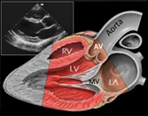

Cardiology Main¶
Atrial Fibrillation & Flutter¶
Brittany Saldivar
Background¶
- AF: 12-lead EKG with absence of p-waves and irregularly irregular QRS complexes
- Flutter: sawtooth atrial F waves (300 BPM) with regular or regularly irregular QRS complexes
- Ventricular rate ratio of F waves: V waves ~150 (2:1), ~100 (3:1), or ~75 (4:1)
- 3 classifications
- Paroxysmal (terminates within 7 days)
- Persistent (persisting beyond 7 days)
- Permanent (normal rhythm cannot be restored)
- Rapid ventricular response (RVR) is HR > 100 (ie AF/Flutter w/ tachycardia)
- AF/RVR is far more often a consequence of hypotension than the cause of it
Evaluation¶
- Causes: Mnemonic H PIRATES
- Hypertension
- Pneumonia, Pericarditis, Post-op
- Ischemia (rare)
- Rheumatic Valve
- Atrial Myxoma or Accessory Pathway
- Thyrotoxicosis
- Ethanol or Excess Volume
- Sick sinus, Sepsis
Management¶
- Treatment goals
- Rate control, Goal HR \< 110 (RACE II)
- Rhythm control (if indicated)
- Stroke prevention
Rate control (inpatient)
- RVR ~ sinus tach of AF; Always work to address the underlying cause (infection, volume overload, etc). Rate control is rarely an emergency unless the patient is unstable
- If stable with RVR (SBP >90)
- IV if HR > 130 or symptomatic (metop 5 mg IV or dilt 15-20 mg IV), otherwise do PO
- AV nodal blocking agents
- B-blockers: Start with metop tartrate (titratable) consolidate to succinate. Avoid in decompensated or borderline HF
- Calcium channel blockers (diltiazem): avoid in HFrEF
- Peri stable (SBPs 80s-90 with preserved perfusion)
- Amiodarone: Consider if decompensated HF, accessory pathway, anti-coagulated. Caution that you may cardiovert pt (stroke risk)
- Unstable (SBPs \<80)
- Cardioversion
Rate control (outpatient)
- typically achieved with beta blocker therapy, metoprolol is most frequently used
Rhythm control (inpatient)
- New onset a-fib (first time diagnosis): most pts will be a candidate for trial of cardioversion
- If onset clearly within 48 hours, can proceed without TEE. Often TEE is done anyway (pt may have had intermittent asymp AF)
- If onset >48 hours or unclear, will need TEE to rule out LAA thrombus
- Pharmacologic options include class 1C: flecainide, propafenone
(avoid in structural heart disease) and class 3: Amiodarone,
dronedarone, sotalol, ibutilide, dofetilide (some require loading
inpt)
- Caution using antiarrhythmics in any pt you wouldn't electrically cardiovert without TEE
Rhythm control (outpatient)
- Consider EP consult for ablation in symptomatic paroxysmal or persistent AF refractory to anti-arrhythmic drugs, AF in HFrEF, or flutter
- Stroke Prevention (for AF and flutter)
- CHA2DS2-VASc risk score >2 in M or >3 in F should prompt long term AC in AF persisting >48 hours
- NOACs (apixaban, dabigatran, edoxaban, rivaroxaban) are preferred to warfarin except in moderate to severe MS or mechanical valve
- If cardioversion planned for new onset AF, start AC as soon as
possible
- Post-cardioversion, anticoagulate for at least 4 weeks due to atrial stunning and stroke risk
- If no contraindications or procedures, continue anticoagulation while inpatient
- Typically do not need to bridge AC for AF in the setting of procedures unless mechanical valve is present. Decide on a case by-case basis
- Left atrial appendage closure can be considered in those with increased risk of bleeding
Valvular Heart Disease¶
Aortic stenosis¶
Jonathan Napper
Etiology¶
- Degenerative calcification of the aortic cusps
- Congenital bicuspid aortic valve
- Chronic deterioration (calcific)
- Prior rheumatic fever/inflammation
Presentation¶
- Angina, syncope, exertional dyspnea, heart failure (HF carries worse prognosis)
- Typically aged 70 80 y/o; if bicuspid aortic valve expect 10-20 yrs earlier
- Physical exam: Systolic crescendo-decrescendo murmur that radiates towards the carotids
- Late peaking murmur, faint or absent S2, or delayed carotid upstroke suggest severe AS
Evaluation¶
- TTE with doppler is test of choice
| Severity | Valve Area (cm2) | Mean Gradient (mmHg) | Velocity (m/s) |
Indexed Valve Area (cm2/m2) |
|---|---|---|---|---|
| Mild | >1.5 | <20 | 2.0-2.9 | >0.85 |
| Moderate | 1.0-1.5 | 20-39 | 3.0-3.9 | 0.60-0.85 |
| Severe | <1.0 | >40 | >4.0 | <0.6 |
| Critical | <0.5 | -- | -- | -- |
AS stages
- A: at risk of AS (those with bicuspid anatomy or calcification
- B: Asymptomatic non-severe AS
- C: asymptomatic AS
- C1: normal EF
- C2: abnormal EF
- This stage might benefit from exercise or stress testing to elicit symptoms
-
D: Symptomatic AS
-
Some with symptomatic AS might not have enough LV reserve to produce high velocities and gradients (ex EF of 10% w/ critical valve area) = low flow/low gradient AS; consider dobutamine to unmask AS
Management¶
- No proven effective medical therapy
- Definitive treatment is valve replacement for:
- Stage D
- Stage C with inducible symptoms on stress testing, low EF, or undergoing other cardiac procedure
- Rapid progression (increase in velocity >0.3m/sec per year)
- Consult cardiac surgery for determination of SAVR vs TAVR
- In general, high risk surgical patients benefit most from TAVR
- At VUMC: If determined to be intermediate to high operative risk by Cardiac Surgery, they will often recommend contacting the TAVR team for evaluation
- Avoid rapid hemodynamic shifts and aggressive changes in preload or afterload
- Aim for normotension
- Avoid preferential vasodilators such as hydralazine or nitroglycerin
- Significant vasodilation may coronary filling pressures -> myocardial ischemia
Monitoring¶
- Severe AS: TTE q 6-12 months
- Moderate AS: TTE q 1-2 years
- Mild AS: TTE q 3-5 years
Post AVR anticoagulation¶
- All patients will get 3-6 months of AC s/p AVR
- Continued duration based on type of AVR
- Bioprosthetic (TAVR and some SAVRs): antiplatelets alone after Initial AC
- Mechanical: lifelong AC with warfarin only
Aortic Regurgitation¶
Jonathan Napper
Etiology¶
- Primary valve disease (rheumatic disease, bicuspid aortic valve, infective endocarditis, syphilis)
- Primary aortic root disease (medial degeneration, aortic dissection, Marfans syndrome, bicuspid aortic valve, syphilis, non-syndromic familial)
Presentation¶
- Acute AR: LV cannot respond to increased volume to maintain stroke volume pulmonary edema and cardiogenic shock
- Chronic AR: indolent presentation, often patient will develop symptoms of heart failure including DoE, orthopnea, PND
- Physical exam: Water-hammer pulses, wide pulse pressure, laterally displaced PMI, high pitched blowing decrescendo murmur best heard at third intercostal space at left sternal border, S3
Management¶
- Acute severe AR
- Prompt surgical repair
- Vasodilators such as nitroprusside and diuretics can be used to stabilize patient
-
Chronic severe AR
- Medical management
- Early symptoms of exercise intolerance can be treated with diuretics
- Systolic BP should also be controlled with goal SBP \< 140 in chronic AR
-
Repeat imaging should be performed 3-6 month to assess for depressed LVEF or LV dilation
-
Stages of Chronic AR: Ranging from Stage (A): Asymptomatic but At Risk AR to Stage (D) Symptomatic Severe AR
- If symptoms are present, automatically Stage D, otherwise Progression through stages is determined by AR Jet Width
- Class I indications for Valve Repair:
- Stage D (Symptomatic) or Stage C (Asymptomatic Severe AR) with LVEF \< 55%, or are undergoing other cardiac surgery
- If LVEF > or equal 55%, patients should be considered for surgery if LV is dilated (LVESD > 50 mm (class IIa) or LVEDD > 65 mm (class IIb))
- Any patient with progressive AR, even if they do not meet criteria for severe AR, should consider valve replacement if undergoing cardiac surgery for other reasons
- Note: TAVI for isolated chronic AR is challenging 2/2 dilation of the aortic annulus and root
Mitral Regurgitation¶
Marcus Threadcraft
Etiology¶
- Primary MR caused by direct involvement of the valve apparatus (leaflets or chordae tendineae)
- Degenerative/myxomatous mitral valve disease (mitral valve prolapse with flail leaflet, mitral annular calcification, chordal rupture)
- Rheumatic fever
- Infective endocarditis
- Papillary muscle rupture following acute (inferior) MI
- Secondary MR- caused by changes of the LV that lead to valvular incompetence
- Dilated Cardiomyopathy
- HOCM with systolic anterior motion
- Coronary Artery Disease or prior MI leading to papillary muscle tethering
Presentation¶
- Acute MR- sudden onset reduction in forward cardiac flow and left atrial/pulmonary vein volume overload
- Dyspnea with flash pulmonary edema
- Left-sided heart failure
- Chronic MR- progressive symptoms d/t cardiac remodeling to compensate for mitral flow reversal
- Progressively worsening heart failure: dyspnea, orthopnea, PND
- LV dilation from volume overload
- LA remodeling/dilation leading to afib
Auscultation¶
- Holosystolic Murmur
- Best heard at Apex
- Radiation to the Axilla
- Frequently associated with S3
- Murmur may be absent in acute MR due to large regurgitant orifice/low velocity regurgitant jet
- Increases w/ increased preload or afterload
- Pulmonary Rales
Evaluation¶
- CXR: assess for pulmonary edema, r/o other causes of acute dyspnea
- ECG: often non-specific, LVH
- Echocardiography: assess valve apparatus, size, and function of LA/LV, grade severity of MR
Chronic MR stages¶
- A: No symptoms
- B: >mild MR w/o hemodynamic changes or symptoms
- C: Severe MR w/o symptoms
- C1: preserved EF and normal LV size
- C2: reduced EF (\<60%), dilated LV (LVESD > 40mm)
- D: Severe/symptomatic
Management¶
Acute hemodynamically significant MR
- Urgent surgical repair or replacement
- Medical stabilization as a bridge to surgery
- Afterload reduction is key to promote forward flow
- Vasodilators (nitroprusside, nitroglycerin) reduce afterload
- Diuresis to reduce preload and improve pulmonary edema
- IABP placement can be used as mechanical afterload reduction
Chronic severe primary MR
- Surgical repair favored over valve replacement
- Class I:
- Asymptomatic patients w/ LVEF 30-59% or LVESD > or equal 40mm
- Symptomatic patients w/ EF > 30%
- Class II:
- A: asymptomatic patients with progressive EF decline or LV dilation on serial monitoring; or very severe MR
- B: new onset AF
- Secondary MR can consider MV repair with persistent class III-IV symptoms while on guideline directed medical therapy
- In HFrEF, consider MitraClip after volume optimization (see Heart Failure section)
Mitral Stenosis¶
Marcus Threadcraft
Etiology¶
Characterized by thickened mitral valve leaflets and fused leaflet tips.
- Rheumatic Fever (leading cause worldwide)
- Calcification of the mitral valve annulus (common in high income countries)
- Autoimmune Diseases: SLE, Rheumatoid arthritis
Presentation¶
- Progressive symptoms: Asymptomatic Heart Failure
- Orthopnea
- PND
- Hoarseness/Dysphagia (compression of recurrent laryngeal nerve/esophagus by enlarged left atrium from pressure overload)
- Symptoms of Right Heart Failure
- Acute Symptoms may present in settings of increased cardiac output (pregnancy, sepsis, or exercise) or tachyarrhythmias
- Dyspnea
- Fatigue
- Palpitations
Physical exam¶
- Low-pitched rumbling, diastolic Murmur, best heard at apex,
low-pitched, rum
- Loud S1, opening snap after S2
- Prominent P2 if pulmonary HTN develops
- Pulmonary Rales
Evaluation¶
- CXR: LA enlargement, increased pulmonary vasculature
- Echocardiography: thickening of mitral valve leaflets, decreased area of valve leaflets, left atrial enlargement
Management¶
- Varies between rheumatic MS and calcific MS (in general, intervention of calcific MS is very challenging and high risk)
- Severe, symptomatic rheumatic MS:
- Percutaneous mitral balloon commissurotomy (PMBC)
- Surgical repair/replacement if patient failed PMBC or undergoing other cardiac surgery
-
Calcific MS has a poor prognosis with 5-year survival \<50%, Intervention is higher risk and should be reserved for severely symptomatic patients
-
No role for commissurotomy with calcific MS
- Surgical valve replacement may be considered for severely symptomatic patients (technically challenging)
Anti-Coagulation¶
- Anti-coagulation is indicated if:
- Mechanical prosthetic mitral valve
- Warfarin, goal INR 3-4 lifelong
- Bioprosthetic mitral valve replacement
- Warfarin, goal INR 2-3 for first 3-6 months
- Atrial Fibrillation regardless of CHADS2VASC score
- Mechanical prosthetic mitral valve
Heart Failure¶
Brittany Saldivar
Background¶
ACC/AHA Stages of HF
- Stage A: At risk but without structural heart disease or symptoms
- Stage B: + structural HD, - symptoms
- Stage C: + structural HD, + prior or current symptoms
- Stage D: refractory HF requiring specialized intervention
NY Heart Association (NYHA) Functional Classes of HF
- Class I: Normal physical activity is not limited
- Class II: Comfortable at rest; normal physical activity results in HF symptoms
- Class III: Comfortable at rest; less than normal activity leads to HF symptoms
- Class IV: Inability to perform any physical activity without symptoms
Etiologies¶
- HFrEF (Clinical diagnosis + LVEF \< 40%)
- Ischemic: Obstructive CAD, previous/current myocardial infarction
- Non-ischemic:
- Load: HTN, valvulopathy
- Arrhythmia: tachyarrhythmia, pacemaker induced
- Myocardium
- Toxins (EtOH, drugs, chemo, radiation),
- Inflammatory (infections, AI),
- Metabolic (thyroid, thiamine deficiency),
- Infiltrative (amyloid, sarcoid, hemochromatosis)
- Stress induced/takotsubo CM
- Genetic
- Idiopathic
- HFpEF: HTN, CAD, obesity, DM, infiltrative, hypertrophic cardiomyopathy
Causes of Heart Failure Exacerbations (FAILURES)
- Forgetting medications or taking drugs that can worsen HF (e.g. BB, CCB, NSAIDs, TZDs), chemo (anthracyclines, trastuzumab)
- Arrhythmia/Anemia: AF, VT, PVCs; Increased arrhythmia burden on device check?
- Ischemia/Infarction/Infection: myocarditis; Acute vascular dysfunction (e.g. endocarditis), especially mitral or aortic regurgitation.
- Lifestyle choices: Dietary indiscretions - high salt, EtOH, excessive fluid intake. Obesity.
- Upregulation (of CO): pregnancy and hyperthyroidism
- Renal failure: acute, progression of CKD, or insufficient dialysis (Increased preload)
- Embolus (pulmonary) or COPD (leads to increase right-sided afterload)
- Stenosis (worsening AS, RAS) leading to hypertensive crisis high left-sided afterload
Presentation¶
- Volume overload: shortness of breath, dyspnea on exertion, Orthopnea, PND
- Nausea/poor po intake (hepatic and gut congestion)
- Confusion (decreased CO)
- Exam: Edema (legs, sacrum), rales, S3, S4, murmur (AS, MR), elevated JVD, + hepatojugular reflex, ascites
Evaluation¶
- CBC, CMP, Magnesium, Lactate, TSH, iron studies
- Troponin, ECG
- BNP (Pro-BNP if on Entresto) high negative predictive value for HF (false negative can occur in obese patients)
- CXR differentiate other causes of dyspnea
- TTE
- Determine hemodynamic and volume profile
- Cold vs warm
- Dry vs wet
| Cardiac Index | Euvolemia | Hypervolemia | |
|---|---|---|---|
| Low | Warm Extremities Adequate UOP Normal PPP |
Warm and Dry Forrester Class I Tx: GDMT as tolerated |
Warm and Wet Forrester Class II Tx: Diuresis, Vasodilators |
| Normal | Cardiogenic Shock Cool Extremities Renal Failure Narrow PP |
Cold and Dry Forrester Class III Tx: Inotropes |
Cold and Wet Forrester Class IV Tx: Diuresis +Tailored therapy (+/- vasodilators, inotropes) |
Management¶
- Telemetry, Daily STANDING weights, 2 L fluid restriction, 2g sodium diet, strict I/Os
- Diuresis: Place on 2.5 x home dose of IV diuretic, dose BID-TID (DOSE Trial)
- Goal is to be net negative (generally 1-2 L per day but patient dependent)
- Check BMP BID and Mg QD, keep K>4 and Mg>2
- Low threshold for substantial increase (double) in loop vs transition to drip if not diuresing adequately
- Can also augment with sequential nephron blockade (thiazides, acetazolamide)
- Continuation/optimization of GDMT (below)
Guideline-Directed Medical Therapy for HFrEF¶
Brittany Saldivar
General Principles¶
- Starting patients on low dose of multiple agents preferred to max dose of single agent
- D/C summary should have discharge weight, diuretic regimen, and renal function
- Daily weights at home with rescue diuretic plan (pm dose for 3 lbs in 1 day, 5 lbs in 3 days
| Drug | Indication | Mechanism/ Benefits | Precautions |
|---|---|---|---|
| Beta Blockers | |||
Carvedilol Metoprolol succinate Bisoprolol |
HFrEF <40 % Stage C HF (NYHA class I IV) |
Reduces catecholamine stimulation. Decreased HR, myocardial energy demand, less adverse remodeling. | Avoid if pt is decompensated (cold); start low and go slow Can continue during exacerbation if patient compensated |
| ARNIs | |||
| Sacubitril/ valsartan | HFrEF < 40% NYHA class II IV Used in place of ACE/ARB |
Prevents vasoactive natriuretic peptide degradation involved in pathogenesis of HF (+ action of ARB) | Need a 36 hr wash-out period if transitioning from ACEi to ARNI Hypotension Risk of angioedema |
| ACEIs | |||
Lisinopril Enalapril Captopril Ramipril |
HFrEF <40 % Stage C HF (NYHA class I IV) |
Blocks harmful effects of RAAS activation and attenuates adverse cardiac and vascular remodeling | Risk of angioedema Monitor renal function and K |
| ARBs | |||
Losartan Valsartan Candesartan |
HFrEF <40 % Stage C HF (NYHA class I IV) |
See ACEIs | See ACEIs Preference for ARB > ACEi if plans to start ARNI |
| MRAs | |||
Eplerenone Spironolactone |
NYHA class II-IV and GFR >30 |
Diuretic and blood pressure lowering effects and blocks deleterious effects of aldosterone on the heart (including hypertrophy and fibrosis) | Hyperkalemia avoid if CrCl <30 or K >5 |
| SGLT2i | |||
Dapagliflozin Empagliflozin |
HFrEF <40% with and without DM NYHA class II-IV In conjunction with background GDMT |
Osmotic diuresis and natriuresis, improve myocardial metabolism, inhibit sodium-hydrogen exchange in myocardium, reduce cardiac fibrosis | UTI/ GU infections Risk of ketoacidosis (both DKA and euglycemic) |
| Vasodilators | |||
Hydralazine Isosorbide Dinitrate |
Persistently symptomatic black patients despite ARNI/ BB/ MRA/ SGLT2i NYHA class III-IV |
Reduces cardiac afterload and preload and may also enhance nitric oxide bioavailability Reduction in mortality for African American patients |
Hypotension |
| Ivabradine | |||
| Ivabradine | HFrEF <35%, on maximally tolerated BB, sinus rhythm with HR > 70 NYHA class II or III |
If current inhibitor involved in SA node activity Decr HR associated with improved outcomes |
Need sinus rhythm Caution in sinus node disease and conduction defects |
| Iron Repletion (IV) | |||
Iron sucrose Ferric carboxymaltose Iron dextran |
Ferritin <100 g/L or ferritin 100-299 g/L AND transferrin saturation <20% | Decreases HF hospitalizations Improves exercise function and QOL |
Risk of anaphylaxis higher in iron dextran |
Device therapies (after optimization of medical GDMT)¶
- Cardiac resynchronization therapy (CRT)
- Class I indication: NYHA class II to IV, LVEF 35% with QRS 150 ms and left bundle branch block (LBBB)
- Class II (consider) If EF \< 35% and:
- QRSd > 150, without LBBB
- AF that requires ventricular pacing and AVN ablation
- Undergoing placement of device with anticipation of >40% ventricular pacing
- ICD
- Class I indication: NYHA class II VI with LVEF \<35% (must have >1yr expected survival and 40+ days from MI)
- Mitra Clip
- Criteria: moderate to severe mitral regurgitation (3-4+), on maximally tolerated GDMT, an ejection fraction >20%, and a left ventricle end-systolic dimension of less than 7 cm
Cardiogenic Shock¶
Ashley Cozart
Definition¶
Impairment of cardiac output due to primary cardiac disorder that results in end-organ hypoperfusion and hypoxia
Etiology¶
- Cardiomyopathic: myocardial infarction with LV dysfunction, exacerbation of heart failure, myocarditis, myocardial contusion, drug-induced
- Arrhythmic: atrial tachycardias (atrial fibrillation/flutter, AVRT, AVNRT), ventricular tachycardia and fibrillation, complete heart block, second degree heart block
- Mechanical: valvular insufficiency, valvular rupture, critical valvular stenosis, ventricular septal wall defect, ruptures ventricular wall aneurysm, atrial myxoma
Presentation¶
- Cold (decreased perfusion) due to reduced cardiac output (can be wet- increased PCWP OR dry normal PCWP)
- Symptoms of volume overload + end-organ hypoperfusion (altered mental status, nausea, abdominal pain, decreased urine output)
- Hypotension; narrow pulse pressure
Evaluation¶
- EKG
- Labs: CBC, CMP, BNP, troponin, lactate
- Evidence of end organ damage: lactic acidosis, acute kidney injury, acute liver injury
- Echocardiogram: assess EF and valves
- LHC If ischemia (see ACS)
- Hemodynamic monitoring via Swan-Ganz or PA catheter:
- No benefit for general shock but does improve in-hospital mortality for those with cardiogenic shock
- PA catheter hemodynamic profile:
- Cardiac index \< 2.2, cardiac power \<0.6, SVR 800-1600, SVO2 \<60%
- LV-dominant: RA (CVP) \<15, PCWP >18, PAPi >1.5 (pulmonary artery pulsatility index)
- RV-dominant: RA >15, PCWP \<18, PAPi >1.5
- Bi-V-dominant: RA >15, PCWP >18, PAPi >1.5
- PAPi \< 1 indicates that patient will likely need RV support
- CP \< 0.5 strongest independent hemodynamic correlate of mortality in CS
- See right heart cath section for interpreting PA catheter profiles
Management (medical & mechanical circulatory support)¶
Medical management¶
Focus on optimizing preload, afterload, and contractility.
- Preload: IV diuresis
- Afterload: IV nitroglycerine, nitroprusside; PO hydralazine, isosorbide dinitrate; vasoconstricting pressors (phenylephrine, vasopressin) if needing BP support
- Contractility - Inodilators (increase contractility, decrease afterload milrinone, dobutamine) or inoconstrictors (increase contractility and afterload epinephrine, norepinephrine)
Mechanical circulatory support indications¶
- Shock refractory to >1 pressor
- Shock 2/2 MI (physiology: unloads LV, increases systemic perfusion, increases myocardial perfusion, and provides hemodynamic support during PCI)
Types of mechanical circulatory support (MCS)
| Intra-aortic Balloon Pump | V-A ECMO | Tandem Heart | Impella | |
|---|---|---|---|---|
| Dynamics | Inflates during diastole, deflates during systole | Blood from femoral vein is oxygenated and pumped to femoral artery | LV: blood aspirated from LA to femoral artery RV: blood aspirate from RA to PA |
Impella 2.5, 5.0 & CP: Blood aspirated from LV to aortic root Impella RP: Blood aspirated from IVC and delivered to PA |
| Flow | 1 LMP | 4.5 LPM | 4-5 LPM | 2.5: 2.5 L/min CP: 3.33 L/min 5.0: 5 L/min RP: 4 L/min |
| Support | LV | BiV | LV, RV, or BiV | LV or RV (RP) |
| Effects | Reduces afterload Increases stroke volume (SV) Increases coronary perfusion Reduces LV preload and PCWP |
Increases afterload Reduces SV Reduces LV preload and PCWP Improves tissue perfusion |
Increases afterload Reduces SV Reduces LV preload and PCWP Improves tissue perfusion |
Reduces SV Reduces preload and PCWP Improves tissue perfusion |
| Complications | Thrombocytopenia Thrombosis Arterial obstruction Aortic rupture or dissection Air embolism |
Circuit thrombosis LV dilation Hypothermia Gas embolism |
Tamponade d/t perforation Thrombosis Embolism (gas or thrombus) Arterial Shunt |
Pump migration Hemolysis Aortic regurg LV perf VT/VF |
Daily management of MCS devices:
- Ensure optimal placement of device with daily CXR
- Anticoagulation (based on device)
- Hematoma monitoring at device site
- Check distal pulses to monitor for limb ischemia
Pearls for MCS
- MCS devices are contraindicated in following situations: aortic regurgitation or metallic aortic valve, aortic aneurysm or dissection, severe aortic or peripheral artery disease, left ventricular or left atrial thrombi, bleeding diathesis, uncontrolled sepsis
- ECMO is placed by the cardiac surgery team, once a patient is cannulated they will move onto the cardiac surgery team
- Impella, tandem heart, and IABPs are placed in the cath lab
- MCS is a bridge to recovery/definitive therapy, durable cardiac support (VAD), or transplant
Cardiac Devices¶
Marcus Threadcraft
Types of Cardiac Implantable Electronic Devices (CIED)¶
- For Controlling Arrhythmias: Implantable Pulse Generators
- Pacemakers: Anti-bradycardia pacing
- ICDs: Anti-tachycardia pacing and defibrillation
- Biventricular Pacemakers: CRT for ventricular dyssynchrony (LBBB & Heart Failure)
- Loop Recorders: implantable devices for monitoring arrhythmias (most often Afib)
- LVADs: augment cardiac output for end-stage heart failure (not covered here)
Pacemakers¶
- Provide anti-bradycardia pacing by stimulating myocardium
- Peripheral permanent pacemakers (PPMs)
- SubQ generator, transvenous leads
- Single chamber RV lead
- Dual chamber RV and RA leads
- BiV: RV, RA, and LV (coronary sinus) leads
- Leadless pacemaker
- Implanted generator in RV
Indications
- Symptomatic Bradycardia
- Heart Block: 2nd Degree Type II w/ sx or 3rd Degree
- Sick Sinus Syndrome
- Carotid Sinus Syndrome
- After catheter ablation of AV node for AF
- CRT
Implantable Cardioverter/Defibrillators (ICDs)¶
- Pacing lead + defibrillation coil
- Detect and treat VT/VF v
- Anti-tachycardia pacing (ATP)- attempts to entrain and terminate VT
- Defibrillation If ATP unsuccessful
Indications
- Primary prevention
- HFrEF
- EF \<35% and NYHA II-III or EF \<30% and NYHA I
- Must be >90d from revasc, >40d from MI, and on GDMT
- Arrhythmogenic syndromes
- Arrhythmogenic RV cardiomyopathy, Brugada syndrome, HCM and cardiac sarcoid with specific risk factors
- HFrEF
- Secondary prevention
- Hx VF arrest or VT
- Inducible VT on EP study with history of syncope
Cardiac Resynchronization Therapy (CRT)¶
- BiV pacer that coordinates LV/RV contraction through synchronized activation of each ventricle following atrial contraction.
- -P: CRT pacing only
- -D: ICD function
Indications
- Class I: LBBB and QRS150 with EF\<35%, NYHA II- IV, on GDMT, NSR
- Class IIa: EF\<35%, NYHA II- IV, on GDMT, NSR AND
- LBBB & QRS 120-149, non-LBBB & QRS150, or EF\<35% and expected to require >40% ventricular pacing
Interpreting Pacemaker Codes¶
| 1st Letter | 2nd Letter | 3rd Letter | 4th Letter | |
|---|---|---|---|---|
| A: atrial, V: ventricular, D: dual, O: none, I: inhibition, R: rate-adaptive | Chamber Paced | Chamber Sensed | Response to Sensed Beat | Program Features |
Examples of Common Pacing Modes¶
- VVI: Single RV lead that delivers a beat if no beat sensed. Often used with chronic AF with bradycardia
- DDDR: Senses and paces both the atria and ventricle. If beat not sensed within a predefined interval, beat delivered. R indicates rate responsivity (changes rate based on changes in patient activity)
- Magnet: Paces at a fixed rate without respect to native electrical activity (AOO,VOO,DOO). Deactivates ICD shock. Often used in surgery or at end of life to avoid ICD shocks
Additional Configurations¶
- Epicardial Leads- pacemaker/defibrillator leads attached to outside
of the heart (requires OR) vs traditional transvenous lead
placement, which are inserted in the Cath Lab
- Epicardial Leads generally placed in smaller children or during cardiac surgery with expected need for pacing/defibrillation
- Abandoned leads
- Absolute contraindication to MRI (ungrounded, produces heat and thermal Injury In setting of magnetic field)
Placement Complications¶
- Acute: pocket hematoma, pneumothorax, myocardial perforation, cardiac tamponade, infection, lead displacement or disconnection
- Long-term: secondary device infection, lead fracture (lead lifetime 10-15 years), insulation failure

Pulmonary Embolism¶
Anna Berry
Background¶
A thrombus originating in a deep vein (LE > UE) embolizing to the pulmonary arterial circulation.
- Risk Factors = Virchows Triad
- Stasis: immobilization, hospitalization, spinal cord injury, or long travel
- Hypercoagulable state: cancer, prothrombotic genetic conditions such as Factor V Leiden, OCPs, antiphospholipid syndrome, nephrotic syndrome, pregnancy, infection, etc.
- Endothelial Injury: surgery, trauma
Most originate from a DVT in the iliac, femoral, and popliteal veins
Presentation¶
- Dyspnea and tachypnea
- Respiratory alkalosis on blood gas from hyperventilation
- Hypoxemia
- Sinus Tachycardia or atrial arrhythmias
- Hemoptysis
- Lower extremity pain, swelling, and redness occurs in 50% of pts with DVT
- RV Failure (large PE) elevated JVP, hypotension, syncope, R parasternal heave, accentuated P2, hepatomegaly
Evaluation¶
- If hemodynamically unstable and PE suspected, provide hemodynamic support (ie. O2, pressors, etc.) and perform emergent bedside TTE
-
If no RV strain evident on TTE, low likelihood of hemodynamically significant PE. Consider other causes of shock.
-
Hemodynamically stable
- EKG
- Most commonly sinus tachycardia
- Less commonly and indicative of large PE: RAD, RVH, RBBB, RA enlargement, S1Q3T3 (deep S in lead I, deep Q and inverted T in lead III), TWI in V1-V3
- CXR: Typically normal. May see linear atelectasis, pleural effusion, PA cutoff sign
- Labs: ABG, troponin, BNP
- May consider lower extremity dopplers
- Imaging vs d-dimer based on pre-test probability:
- Low pre-test probability (use Wells Criteria) d-dimer
- For moderate to high pre-test probability CTA Chest PE protocol
- If high pre-test probability or moderate pre-test probability with >4 hour delay in work-up, start empiric anticoagulation if bleeding risk is acceptable while work-up is ongoing
- TTE
- EKG
Management¶
| PE Class: | Low risk | Submassive | Massive |
|---|---|---|---|
| Definition | Hemodynamically stable No evidence of right heart strain or myocardial necrosis on labs or TTE |
Hemodynamically stable Evidence of right heart strain or myocardial necrosis: RV strain on TTE (ex: D-sign), BNP >150, trop >0.05 |
Hemodynamically unstable (ex: SBP<90) Evidence of RV strain |
| Management | Start anticoagulation LWH or heparin gtt (if renal impairment) Can also use NOAC. Rivaroxaban & apixaban can be used as initial management. Edoxaban & dabigatran can be used after 5-10 days of parenteral therapy |
Provide hemodynamic support, monitor for decompensation Start anticoagulation with unfractionated heparin gtt STAT consult cardiology for consideration of catheter directed thrombolysis (EKOS) or embolectomy |
Provide hemodynamic support. Start anticoagulation with unfractionated heparin gtt Page CCU fellow STAT. Consider systemic tPA (this is a fellow/attending level decision). Discuss with cardiology catheter directed thrombolysis (EKOS) or embolectomy |
tPA Considerations¶
- Dose is 100mg tPA over 2hrs
- Most effective within 24 hours but effective up to 14d
- Contraindications:
- Absolute:
- CNS Pathology: hemorrhagic or ischemic CVA within 3 mo, AVM, CNS neoplasm, recent surgery
- Trauma: Recent head trauma w/ fx or injury
- Relative
- Surgery: surgery w/in 3 wks
- Heme: active bleeding, bleeding diathesis, plt \< 100, oral AC
- Age: >75 yo, dementia
- Absolute:
Long-term management¶
- Anticoagulation: see Venous Thromboembolism in Hematology/Oncology
Blood Pressure¶
Inpatient Hypertension¶
Lee Richardson
Background¶
- Hypertensive urgency: SBP > 180mmHg/DBP > 120mmHg
- Hypertensive emergency: SBP > 180mmHg/DBP > 120mmHg + end organ damage
Evaluation¶
- Are there signs/symptoms of end organ damage?
- Neurologic symptoms: agitation, delirium, stupor, seizures, visual disturbances
- Focal neurologic deficits
- Chest pain
- Back pain (consider aortic dissection)
- Dyspnea (consider pulmonary edema)
- BMP, LFTs, Troponin, BNP: Lab findings suggestive of end-organ damage
Management¶
- Goal is to lower BP back to normal over 24-48 hours
- Initial lowering should be 10-20% in minutes if HTN emergency; goal should be 10-20% in 2-4 hours if HTN urgency
- Typically aim for initial goal BP near 160/110
- Exceptions to gradual lowering include:
- Acute stroke: call code stroke, lower ONLY if BP > 185/110 in pts under consideration for reperfusion therapy; or BP > 220/120 in pts not candidates for reperfusion therapy
- Aortic dissection: Goal = rapidly lower BP in minutes to target of 100-120 systolic to avoid aortic shearing forces
- Pharmacologic therapy
- If pt was previously on anti-HTN meds, ensure their home medicines have been restarted at appropriate doses, formulation (long acting vs. short), and dosing intervals
- If pt has a rapid acting anti-HTN med, can consider giving a dose early or an extra dose and then up titrating their overall daily dose
- Rescue therapies
- Captopril PO (12.5mg or 25mg dosed Q8H; conversion ratio of captopril:lisinopril = 5:1)
- Hydralazine PO (10-20mg initial dosing Q6H)
- Isosorbide dinitrate PO (5-20mg TID)
- Nifedipine XL PO (dose at 30mg initially, max 90 mg BID; NOT sublingual)
- Labetalol IV (10-40mg initially; dosed up to every 20-30mins)
- Hydralazine IV (10-20mg initially; dosed up to every 30 mins).
- Nitropaste 1 (can add/wipe away for titration; dose Q6H until oral meds can be started for better long-acting control)
- Dialysis if missed session
Additional Information¶
-
Refractory HTN: try additional agents listed above vs. escalation of care for drip (nicardipine, nitroglycerin, nitroprusside, esmolol).
-
Most drips that can be done for this indication are done in stepdown and usually require no-titration of the infusion and occasionally the MD to be bedside to initiate the infusion.
-
This includes diltiazem, labetalol, nitroglycerin, and verapamil drips. Nicardipine, esmolol, and nitroprusside drips are not allowed on step down.
Autonomics and Orthostatic Hypotension¶
Leonard Chiu
Background¶
- Orthostatic Hypotension: SBP > 20 mmHg, DBP > 10 mmHg), or HR Increase > 30 within 3 min of standing up or head-up tilt to 60% on a tilt table
- Etiologies: Neurogenic OH (nOH) vs non-neurogenic OH
- nOH associated with autonomic failure
- Blunted tachycardia during hypotension characteristic of autonomic failure
- nOH: If HR rise is \<15
- nOH also associated with periods of high BP (supine hypertension)
- Ex: Neurodegenerative disease, neuropathy (diabetes, amyloid, paraneoplastic, etc)
- Other causes: volume depletion (most common), medications (diuretics, alpha-1 blockers, BB, etc), pump failure (severe AS, arrhythmia)
Evaluation¶
- Orthostatic vitals signs (checking supine, sitting, and standing with 5-minute wait in each position)
- Volume status exam
- Labs: CBC, CMP, EKG, TSH, B12, , LFTs,
- Consider SPEP/UPEP, paraneoplastic panel, autonomic function testing depending on clinical context
- Autonomic Function Testing: Available at 4:15pm Tues, Wed, Thurs NPO 4 hours prior
- Hold oral pressors and antihypertensives 12 hours prior
Management¶
- Conservative:
- TED hose and abdominal binder for ambulation
- Drink 16oz of fluid 15 min prior to standing
- If they have supine HTN, keep HOB 30-45 degrees at all times
- Add 2.3-4.6g of salt per day to diet (if no contraindications)
- Avoid high temperatures (which cause peripheral vasodilation)
- Supine HTN therapies: transdermal nitroglycerin (preferred); minoxidil, hydralazine, or clonidine in select patients
Orthostatic hypotension pharmacologic therapies
| Drug | Dose | Mechanism | Side effects |
|---|---|---|---|
| Fludocortisone (Florinef) | 0.1mg QD by 0.1 mg Max: 0.3 mg QD |
Mineralocorticoid increase blood volume. Enhances sensitivity to circulating catecholamines | Edema HTN HypoK Do not use in CHF |
| Midodrine | 2.5mg TID by 2.5mg Up to 10mg TID |
Peripheral-selective 1 agonist constricts both aa & vv | Supine HTN Pilomotor reactions Pruritus GI upset Avoid in uncontrolled HTN, urinary retention, heart disease |
| Droxidopa | 100mg by 100mg Up to 600mg TID |
NE precursor carboxylated to NE. Can cross BBB. | Supine HTN, less than midodrine |
| Atomoxetine | 10mg or 18mg | SNRI | Do not use w/ glaucoma or MAOI |
Syncope¶
Sarah Myers
Background¶
- Definition: abrupt, transient loss of consciousness with rapid & spontaneous recovery
- Presyncope symptoms occurring before syncope including lightheadedness, tunnel vision/other visual disturbances
Classification¶
- Cardiac syncope
- Tachyarrhythmias: VT, SVT
- Bradyarrhythmias: sinus node dysfunction, AV blocks (high grade)
- Structural: Aortic Stenosis, HCM, cardiac tamponade, congenital anomalies, masses/tumors
- Vascular: Pulmonary embolism, aortic dissection, severe pHTN
- Noncardiac syncope
- Reflex mediated
- Vasovagal; most common form of reflex mediated syncope
- Can occur sitting/standing or with trigger (stress, pain, medical settings)
- Classically has prodrome of nausea, diaphoresis, tunnel vision followed by hypotension and/or bradycardia
- Situational (micturition/defecation/coughing)
- Carotid sinus sensitivity syndrome
- Vasovagal; most common form of reflex mediated syncope
- Orthostatic
- Medications (diuretics, nitrates/CCB/alpha blockers, TCAs)
- Volume depletion (hemorrhage, dehydration)
- Autonomic dysfunction
Differential diagnosis¶
- Seizure, stroke, metabolic derangements, Intoxication/withdrawal, hypoglycemia, head trauma
- With rare exceptions, these do not result In complete LOC with spontaneous recovery
Evaluation¶
- History and physical are essential for evaluation of a syncopal event
- Characteristics associated with cardiac syncope
- Male, >60, known structural/ischemic heart disease, brief/no prodrome, syncope while supine/at rest or during exercise, family hx of SCD/premature death, abnormal exam
- Characteristics associated with noncardiac syncope
- Younger age, syncope while standing or with positional changes, prodrome (nausea, vomiting, warmth), specific triggers, previous episodes that have been similar
Workup¶
- EKG on all patients with syncope, monitor those who are admitted on telemetry
- CBC, CMP, troponin, BNP (If cardiac cause suspected), POC glucose, UDS, orthostatic VS
- EEG and neuroimaging if concern for seizure activity or focal neuro deficit
- TTE and consider stress testing particularly in exertional syncope
Management¶
- Cardiac: managed as indicated based on pathology
-
If arrhythmia is suspected but not captured on admission, consider discharge with event monitor
-
Noncardiac
-
Reflex
- Vasovagal- consider tilt table testing If recurrent or diagnosis not clear
- Situational- mainly avoiding triggers
- Carotid sinus syndrome- may require PPM
-
Orthostatic
- Medication related
- Appropriate to hold potentially offending medications (diuretics, vasodilators) during evaluation
- Monitor for worsening supine hypertension, arrhythmias, or heart failure when holding
- Volume depletion; resuscitate as appropriate
- Autonomic dysfunction: see autonomics section
- Medication related
-
Driving: TN law does not require any MD to inform the state of TLOC
- Should still recommend patients not drive while work-up ongoing. Document all conversations about driving with patients
Diagnostic Cardiac Tests¶
Approach to the ECG¶
Melis Sahinoz
Method = mastery, approach each EKG the same
Rate¶
- Regular rhythms = Rule of 300 = 300 (large boxes between QRS complexes)
- 300, 150, 100, 75, 60, 50
- Irregular rhythms or severe bradycardia = (total number of QRS complexes on ECG) x 6
Rhythm¶
- Determine regular vs irregular: calipers or march out QRS complexes on paper
- Criteria for Sinus rhythm: P before every QRS; Upright P in Lead I, II; Negative in aVr
Axis¶
- Normal: - 30o to + 90o
- Quick method: Leads I and II
- Normal Axis: Upright in I and II
- Left Axis Deviation: Upright in I, down in II
- Causes: LVH, LBBB, Left anterior fascicular block, prior inferior MI
- Right Axis Deviation: Down in I, up in II
- Causes: RVH, RBBB, Left posterior fascicular block, prior lateral MI, PE
Intervals¶
- PR Interval: normal 120 200 ms
- If \< 120 ms, consider pre-excitation with accessory pathway (i.e. WPW)
- If > 200 ms, first degree AV block
- QRS Complex: 60 100 ms (normal)
- 100-120 ms: Incomplete BBB or non-specific intraventricular conduction delay (IVCD)
- > 120ms: complete BBB, ventricular tachycardia, hyperkalemia
- QT interval: Normal duration \< 450ms in men and \< 460ms in women
- QT is inversely proportional to HR (QT interval shortens at faster HRs)
- Quick estimate: normal QT is less than half the preceding RR interval
- QTc estimates the QT interval at a HR of 60 bpm (to allow for comparison across HRs)
- A couple formulas exist to calculate QTc:
- QTcB= most commonly used due to simplicity, most accurate HR of 60
- QTcF= more accurate when HR is outside the range of 60-100
- Clinically significant when generally QTc > 500 ms
- Causes of Prolonged QTc: hereditary, medication-induced (anti-emetics, ABX, psychiatric meds), hypokalemia, hypomagnesemia, hypocalcemia, ischemia
Morphology¶
- P wave: P waves in limb leads should be 2.5 small box high and 2.5
small box wide
- Right Atrial Enlargement: Peaked P Wave in Lead II that measures >2.5 mm
- Left Atrial Enlargement
- Lead II: Bifid P Wave (two humps) with total duration > 110 ms
- Lead V1: Biphasic P wave, terminal deflection > 1mm wide and deep
- If 3 different P wave morphologies in same lead: wandering atrial pacemaker (HR \< 100) or multifocal atrial tachycardia (HR > 100)
- QRS complex
- Voltage
- Low voltage: QRS amplitude \< 5mm in limb leads or \< 10mm in
precordial
- Causes: pericardial effusion, infiltrative cardiomyopathy, obesity
- Right Ventricular Hypertrophy: Tall R Waves in V1 (> 7mm) and right axis deviation
- Left Ventricular Hypertrophy: multiple criteria exist
- Sokolow-Lyon criteriais a common example: S in V1 + R in V5 or V6 >35mm, R in aVL >1.1 mV
- Low voltage: QRS amplitude \< 5mm in limb leads or \< 10mm in
precordial
- Voltage
- Conduction delays
- RBBB: Wide QRS and RSR in V1 or V2; deep broad S In lateral leads
- LBBB: Wide QRS, large S in V1, broad monophasic R wave in lateral leads (I, aVL, V6)
- R wave progression
- R wave normally gets progressively larger from V1 to V6
- If the transition does not occur by V4, this is called "poor R wave progression". This is seen in chronic lung disease, LVH, left anterior fascicular block, and anterior MI.
- Q-wave: Small Q waves are normal in most leads
- Never normal in V1-V3
- Pathologic Q waves: > 1 box wide and 2 boxes deep or > 25% height of R wave
- ST Segment
- ST Elevation: STEMI, LBBB (ST elevation in leads with deep S waves), LVH, Ventricular paced rhythm, Pericarditis (associated with PR depression), coronary vasospasm, Brugada syndrome
- ST Depression: ischemia, reciprocal change in STEMI, posterior myocardial infarction (V1-V3), digoxin, hypokalemia
- See ACS section for STEMI criteria, Wellens Syndrome
- T wave
- Normal T waves are upright in all leads except aVR and V1
- Inverted T Waves
- Acute ischemia (if present in contiguous leads), LBBB (in lateral leads), RBBB (V1-V3), LVH (strain pattern similar to LBBB), RVH (RV strain in V1-V3 or inferior leads), PE (right heart strain or part of S1,Q3,T3), intracranial pathology
- Peaked T Waves
- Hyperkalemia vs hyperacute T waves that precede ST elevation and Q waves in STEMI
Right Heart Catheterization¶
Pakinam Mekki
Background¶
- Pulmonary artery catheter (PAC): Multilumen catheter that sits in the right heart to provide invasive measurement of hemodynamic parameters
- Indications for PAC placement
- Diagnose undifferentiated shock
- Severe cardiogenic shock
- Diagnose pulmonary hypertension
- Diagnose left -> right shunting
- Diagnose valvular and pericardial disease
- Titrating medications, specifically inotropes, pulmonary vasodilators, diuresis
- Contraindications to PAC placement
- RA/RV mass or thrombi
- Tricuspid or pulmonic valve endocarditis
- Mechanical tricuspid or pulmonic valves
- Presence of RV assist device
- Complications of PAC placement
- Arrythmias: VT, RBBB, 3rd degree AV block if preexisting LBBB
- Infection (endocarditis of the pulmonary valve)
- Bleeding
- Pulmonary embolism and pulmonary Infarct
- Pneumothorax
- Air embolism
- Pulmonary artery perforation / rupture
- Endocardial/valvular damage
PAC Pressure Tracings

| Definition | Normal "Rule of 5s" |
|
|
|---|---|---|---|
Central Venous Pressure (CVP) |
Pressure in superior vena cava, often an indicator of volume status | 0 - 5 mmHg | Elevated CVP is indicative of cardiac dysfunction and/or fluid
retention Low CVP is indicative of volume depletion or decreased venous tone |
| Right Atrial Pressure (RAP) | Surrogate for preload, should be same as CVP | 0 - 5 mmHg | Elevated with disruption in forward cardiac flow or increase in intravascular volume |
| Right Ventricle Pressure ( | Right ventricular systolic and diastolic pressures; RVSP can be surrogate for PASP | 25/5 mmHg | Elevated with diseases that elevate PA pressure and pulmonic valve disorders. Severe RVP elevations are generally chronic while acute conditions typically have RVSP <40-50. |
| Pulmonary Artery Pressure (PAP) | Measured as systolic, diastolic, and mean pressures. Diagnoses pHTN. | 25/10 mmHg Mean: 10 - 19 mmHg |
Elevated In acute conditions (PE, hypoxemia induced pulmonary vasoconstriction) or pHTN (mean PAP > 20 mm Hg) |
| Pulmonary Artery Wedge Pressure (PAWP or wedge) | Pressure measured by wedging the PAC into a small pulmonary arterial branch; surrogate for left atrial pressures and LVEDP | 10 mm Hg | Increased with elevated LVEDP: systolic or diastolic heart failure, mitral and aortic valve disorders, hypervolemia, R to L shunts, tamponade, constrictive/restrictive cardiomyopathy |
| Thermodilution Cardiac Output & Index | Amount of blood pumped in one min. CI is the cardiac output divided by body surface area (to standardize for body size) | CO: 3.4-15 L/min CI: 2.8-4.2 L/min/m^2 |
Low CI: systolic/diastolic heart failure, severe valvular disorder (MR, AS), RV failure, pHTN, cardiogenic shock. Elevated CI (high-output state): sepsis, anemia, thyrotoxicosis, A-V shunt |
Mixed central venous oxyhemoglobin saturation (SvO2) |
% of oxygen bound to Hgb in blood returning to the right side of the heart, reflects total body O2 extraction | 65-70% | High SvO2 (> 65%) = decreased O2 demand or high flow states seen in distributive shock (sepsis) Low SvO2 (< 50%) = decreased O2 delivery seen in cardiogenic or hypovolemic shock. In low SvO2 states, there is less O2 supply to same demand) |
Calculating Hemodynamic Parameters from PAC Pressures¶
| Definition | Normal Values | Interpretation | |
|---|---|---|---|
| Fick CO and CI | Calculated CO based on Oxygen consumption (VO2), Hbg, and O2 sats of arterial and venous blood | 4-7 L/min 2.5-4 L/min/m2 |
See "Cardiac Index" above. |
| Systemic Vascular Resistance (SVR) | Measurement of afterload; helpful in delineating the etiology of shock as well as guiding afterload-reduction therapy in HFrEF | 700-1200 dynes*s*cm-5 | Elevated SVR is seen in hypovolemic, cardiogenic, and obstructive shock Decreased SVR is seen in distributive shock (sepsis, anaphylaxis, neurogenic) |
| Transpulmonary gradient (TPG) | Differentiates between pre- and post-capillary pulmonary hypertension. | < 12 mmHg | A TPG value greater than 12 mmHg indicates that a component of the pHTN is secondary to pulmonary vascular disease |
| Pulmonary Vascular Resistance (PVR) | Gold standard in the estimation of the severity of pre-capillary
pHTN Reflects the pressure drop across the pulmonary system only and is independent of the LA, mitral valve and the LV |
< 3 Wood Units 30-90 dynes*sec*cm5 |
Elevated PVR (>3 Wood units) suggests pre-capillary pHTN Normal PVR seen in pulmonary venous hypertension (diastolic dysfunction) |
| Pulmonary artery pulsatility index (PAPi) | Pulmonary pulse pressure relative to preload (RAP), Indicator of RV function | > 0.9 | PAPi < 0.9 predicts in-hospital mortality and/or need for RVAD in acute MI. Can be decreased in pure RV failure or biventricular failure |
| Cardiac Power | Cardiac output relative to afterload, a measure of LV contractile reserve | Normal > 1 | CP< 0.6 strongly suggestive of LV failure Found to be a strong independent hemodynamic correlate in pts with cardiogenic shock. Predictor of mortality in CCU |
Bedside Echocardiography¶
Jamie Pfaff
Finding an Ultrasound¶
- MICU: radiology room behind charge nurses desk in middle hallway
- VA ICU: In front of resident workspace
- 8N: Behind nurses station before entering cleaning supply room
- 8S: In supply closet to left as your walk toward nursing station - (door code is 1-3-5)
- 6MCE: COVID restricted (ask nurses)
- CCU/5N only: supply room on left as entering CCU
- Round wing: 5th floor, ask nurses
TTE Standard Views¶

Parasternal long¶


- Probe position: Rotate probe 180 degrees with right edge of probe/probe marker pointing toward patients left shoulder
-
Make sure probe is centered over mitral valve (In right spot if you can see MV and AV)
- Distance separating the anterior MV leaflet from the septal wall as measure of LV systolic function (easy evaluation of systolic function)
- Place M mode spike at tip of mitral leaflet and hit M mode (perpendicular to septum)
- Identify E point (passive filling of LV) and determine distance
from interventricular septum (IVS)
- \<7mm = Normal
- >10mm = HF
- Confounders that elevate EPSS: AR, MS
Parasternal short¶
- Probe position: Rotate probe 180 degrees with right edge of probe/probe marker pointing toward patients left shoulder
- Good position to assess EF by visualizing wall thickening
Apical four chamber
- Probe position: Slide down and look near patients left nipple (or in the intermammary fold after lifting up breast tissue if needed - at PMI if able to palpate)
- Good to assess EF by visualizing cardiac shortening
Subxiphoid¶
- Probe position: Push probe head into patients abdomen just below xiphoid and flatten probe to make nearly parallel to patients position, marker to pts left
- Troubleshooting: shift probe slightly left of midline (toward patients right) and angle toward heart/right to use liver as acoustic window or ask patient to take big breath (moves heart closer to probe)
- Best window to visualize pericardial effusion
IVC¶

- Probe position: subxiphoid area with probe marker facing toward patients head tilted slightly left of midline, trace IVC into RA to verify correct vessel (vs aorta)
- IVC size and collapsibility used as a surrogate for CVP and RAP
- \<2.1 cm and >50% collapse: RAP ~3mmHg
- \<2.1 cm and \< 50% collapse or >2.1cm and >50% collapse: RAP ~8mmHg
- >2.1cm, \<50% collapse: RAP ~ >15mmHg
Resources¶
- https://www.coreultrasound.com/basic-cardiac-function/
- http://pie.med.utoronto.ca/tte
- https://www.echocardiographer.org/TTE.html
- App: FATE CARD (Focus Assessed Transthoracic Echocardiography)